Capacitors & Inductors Lecture 3
The two energy-storing elements. Capacitors store energy in an electric field and fight changes in voltage; inductors store energy in a magnetic field and fight changes in current. Their charging/discharging behaviour follows the same exponential curve — learn it once, use it twice.
1 The Electric Field
Around every charged body there is an electric field, drawn as electric flux lines that show its strength and direction at every point: they leave + charges, enter − charges, take the most direct path, and never cross. Denser lines = stronger field.
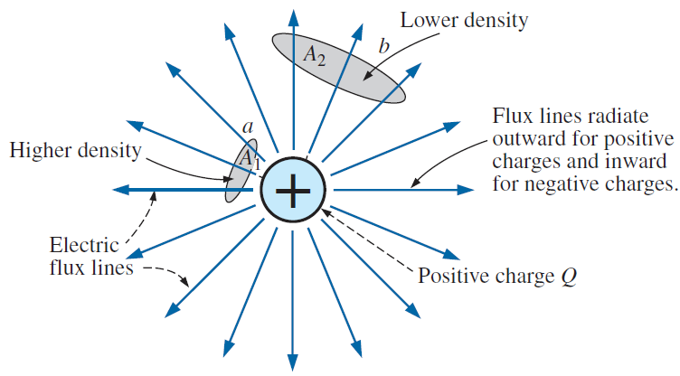
The total flux is proportional to the charge that produces it (Ψ = Q), and the flux density is flux per unit area:
- D – electric flux density (flux/area)
- Ψ – electric flux (numerically = charge Q, in coulombs)
- E – electric field strength (N/C): force per unit charge
Reference: Boylestad, Ch. 10.2.
2 Capacitance & Dielectrics
Put two conducting plates close together, connect a battery, and charge piles up: +Q on one plate, −Q on the other, with a uniform electric field between them. Capacitance measures how much charge is stored per volt:
- C – capacitance (farads, F); 1 F = 1 C/V (huge — practical caps are µF, nF, pF)
- Q – charge stored on each plate (C)
- V – voltage across the plates (V)
For a parallel-plate capacitor, geometry and the insulating material decide the capacitance:
- A – plate area; d – plate separation
- ε – permittivity of the dielectric (F/m)
- ε₀ = 8.85 × 10⁻¹² F/m (vacuum); εr – relative permittivity (air ≈ 1, mica ≈ 5, ceramics up to thousands)
What the dielectric does
The insulator between the plates isn't passive. Its molecules form little dipoles that align with the field (polarization), partially cancelling the field inside. Less net field → less voltage needed for the same charge → more capacitance. That's why εr is also called the dielectric constant.
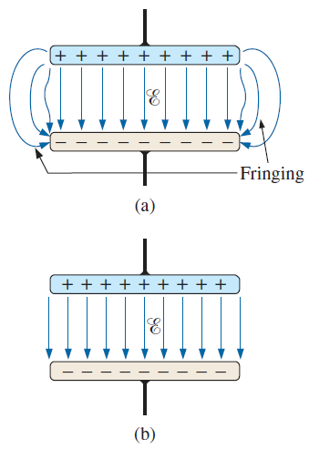
Reference: Boylestad, Ch. 10.3–10.5.
3 RC Transients — the Charging Phase
Connect a resistor and an uncharged capacitor to a battery. At the first instant the capacitor behaves like a short circuit (no voltage on it yet) and current jumps to E/R. As charge builds up, the capacitor voltage rises and pushes back, so the current dies away. Everything follows the exponential "universal time-constant" shape with:
- τ – time constant (seconds)
- R in ohms, C in farads
- vC climbs from 0 toward E; iC and vR decay from their initial values to 0
- After 1τ: 63.2 % of the way there; after 5τ: > 99 % — transient considered finished
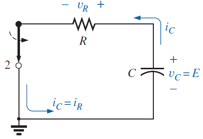
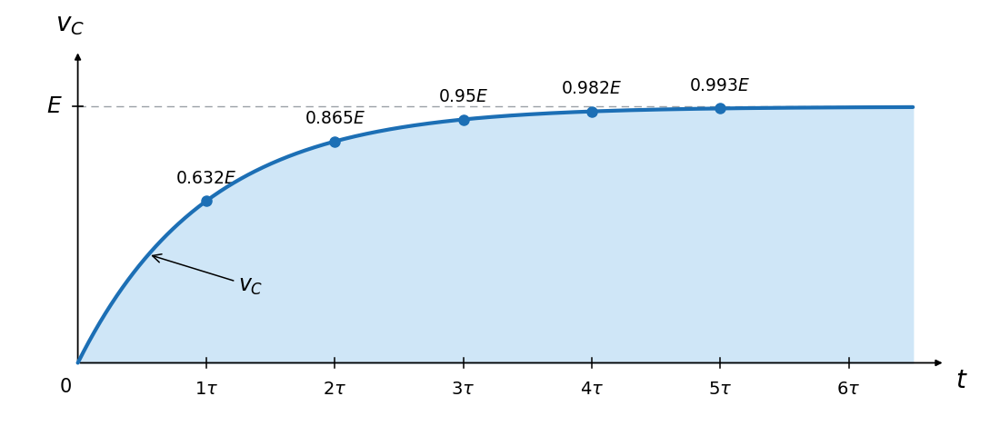
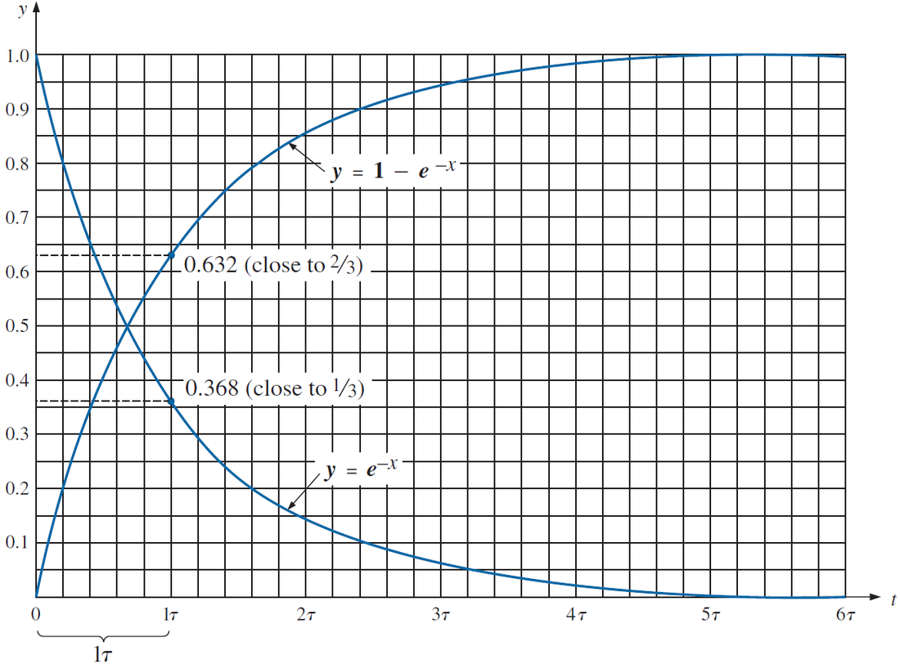
Reference: Boylestad, Ch. 10.6–10.7.
4 RC Transients — Discharging & iC
Flip the switch so the charged capacitor sees only the resistor: it now acts as the source, driving current the opposite way until empty. Same time constant, falling curve:
- discharging with τ = RC, complete after ≈ 5τ
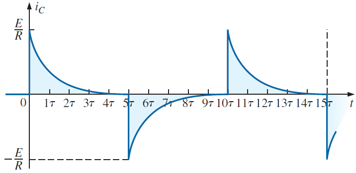
The defining current equation
The capacitor current at any instant is set by how fast its voltage changes:
- Steady DC voltage → dv/dt = 0 → iC = 0: a capacitor is an open circuit to steady DC
- Fast voltage changes → large current: capacitors resist sudden voltage jumps
Reference: Boylestad, Ch. 10.8–10.10.
5 Capacitors in Series & Parallel, Stored Energy
Opposite to resistors! In series the same charging current flows for the same time, so every capacitor stores the same charge, and total capacitance shrinks. In parallel all share the same voltage and the charges add:
- From KVL: E = V₁ + V₂ + V₃ with V = Q/C per capacitor
- Same E across all: E = V₁ = V₂ = V₃
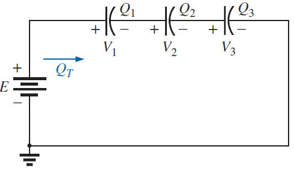
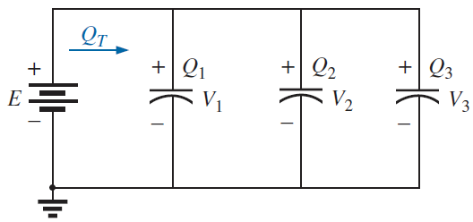
Energy stored by a capacitor
- WC – energy stored in the electric field (joules, J)
- V – voltage across the capacitor (V)
Reference: Boylestad, Ch. 10.11–10.12.
6 The Magnetic Field
A magnetic field surrounds every magnet and — crucially — every current-carrying conductor. It is drawn as continuous flux lines (symbol Φ) that leave the north pole and enter the south pole, always forming closed loops.
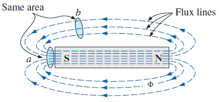
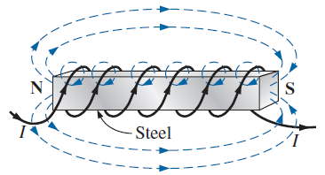
- B – flux density (teslas, T); 1 T = 1 Wb/m²
- Φ – magnetic flux (webers, Wb); A – area (m²)
- µ – permeability: how easily a material carries flux; µ₀ = 4π × 10⁻⁷ Wb/(A·m)
Materials sort by relative permeability µr: diamagnetic (µr < 1), paramagnetic (µr slightly > 1, e.g. oxygen, sodium, platinum) and ferromagnetic (µr ≫ 1, hundreds to thousands — iron, nickel, steel). Ferromagnetic cores multiply the flux of a coil enormously, but they saturate: beyond a point, more current barely adds flux.
Reference: Boylestad, Ch. 11.2 & 12.
7 Inductance, Faraday's Law & Lenz's Law
A coil's ability to oppose changes in current — and to store energy magnetically — is its inductance. For a coil of N turns wound on a core:
- L – inductance (henries, H)
- N – number of turns (note the square!)
- µ – core permeability; A – core cross-section (m²); l – coil length (m)
Faraday's law — where induced voltage comes from
Move a magnet through a coil (or change the current in a nearby coil) and a voltage appears across it. The faster the flux changes and the more turns, the bigger the voltage:
- e – induced voltage (V)
- N – turns; dΦ/dt – rate of change of flux (Wb/s)
- No change in flux → no induced voltage
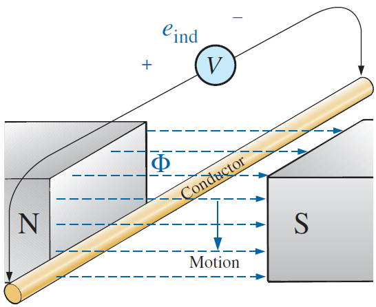
Lenz's law fixes the sign: the induced voltage always acts to oppose the change that caused it ("nature dislikes change"). Applied to a coil's own current, Faraday's law becomes the inductor's defining equation:
- Steady DC current → di/dt = 0 → vL = 0: an inductor is a short circuit to steady DC
- Sudden current changes → large voltage: inductors resist sudden current jumps
Reference: Boylestad, Ch. 11.2–11.4.
8 RL Transients — Storage & Release
Storage phase (switch closes)
At the instant of switching, the inductor refuses any jump in current (iL starts at 0 — momentarily an open circuit) and the full supply voltage appears across it. The current then climbs exponentially to its final value Im = E/R:
- τ = L/R (seconds) — note: R in the denominator, unlike τ = RC
- 63.2 % of final current after 1τ; transient done after ≈ 5τ
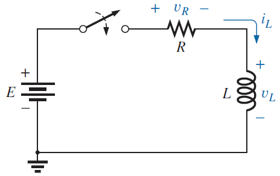
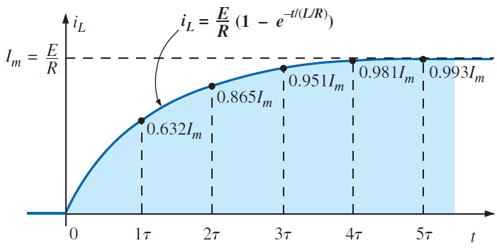
Release phase (switch opens)
Open the switch and the inductor insists its current keeps flowing for an instant. Forced through whatever path remains (resistor R2), the collapsing field can generate a voltage spike much larger than the supply with reversed polarity — from the lecture:
- then decays with τ′ = L/(R₁+R₂)
- e.g. R₂ = 2R₁ gives a spike of −3E — this is why switching inductive loads makes sparks
Reference: Boylestad, Ch. 11.5–11.8.
9 Inductor Combinations, Steady State & Energy
Inductors combine exactly like resistors (and opposite to capacitors):
- two-inductor product/sum shortcut works just like for resistors
Steady-state DC: the golden shortcut
Once all transients settle (≈ 5τ), in a DC circuit:
Energy stored by an inductor
- WL – energy stored in the magnetic field (J)
- I – steady current through the coil (A)
Reference: Boylestad, Ch. 11.9–11.12.